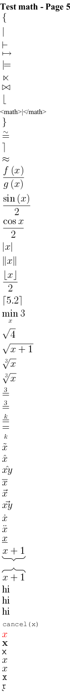

@startcreole math-Page-5
= Test math - Page 5
<math>{</math>
<math>|</math>
<math>|--</math>
<math>|-></math>
<math>|==</math>
<math>|><</math>
<math>|><|</math>
<math>|__</math>
<math>|~</math>
<math>}</math>
<math>~=</math>
<math>~|</math>
<math>~~</math>
<math>f(x)/g(x)</math>
<math>sin(x)/2</math>
<math>cosx/2</math>
<math>absx</math>
<math>norm x</math>
<math>floor x/2</math>
<math>ceil 5.2</math>
<math>min_x 3</math>
<math>sqrt4</math>
<math>sqrt(x+1)</math>
<math>root(3)(x)</math>
<math>root3x</math>
<math>stackrel3=</math>
<math>stackrel(3)(=)</math>
<math>overset(k)(=)</math>
<math>underset(k)(=)</math>
<math>tilde x</math>
<math>hat x</math>
<math>hat(xy)</math>
<math>bar x</math>
<math>vec x</math>
<math>vec(xy)</math>
<math>dot x</math>
<math>ddot x</math>
<math>ul x</math>
<math>ubrace(x+1)</math>
<math>obrace(x+1)</math>
<math>mbox(hi)</math>
<math>text(hi)</math>
<math>"hi"</math>
<math>cancel(x)</math>
<math>color(red)(x)</math>
<math>bb(x)</math>
<math>sf(x)</math>
<math>bbb(x)</math>
<math>cc(x)</math>
<math>tt(x)</math>
<math>fr(x)</math>
@endcreole